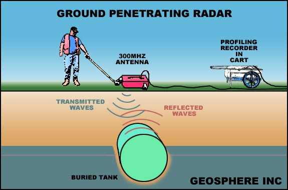

| GPR | |
 Short for ground penetrating radar, a UWB imaging technology used for subsurface earth exploration. GPR uses electromagnetic wave propagation and scattering to image and identify changes in electrical and magnetic properties in the ground. GPR systems have wide applications, such as locating underground utility lines, monitoring airplane runways for structural integrity, detecting unexploded land mines, conducting groundwater studies or forensic research and surveying land for construction purposes. The FCC has mandated that GPR must operate below 960 MHz or in the frequency band 3.1-10.6 GHz and a GPR system can only operate when in contact with or in close proximity to the ground for the purpose of detecting and imaging subsurface anomalies, such as buried objects, sinkholes or underground caves and fluctuations in the earth's composition. The FCC has limited GPR operation to law enforcement, fire and rescue organizations, scientific research institutions, commercial mining companies and construction companies. |
|
©2006. I.T Encyclopedic Dictionary. Program designed and created by: Arjay C. Nacion |
|
Created exclusively for Mabini Colleges. |
|